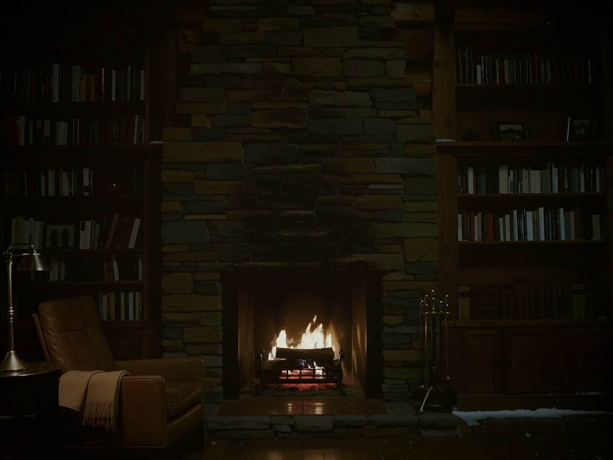
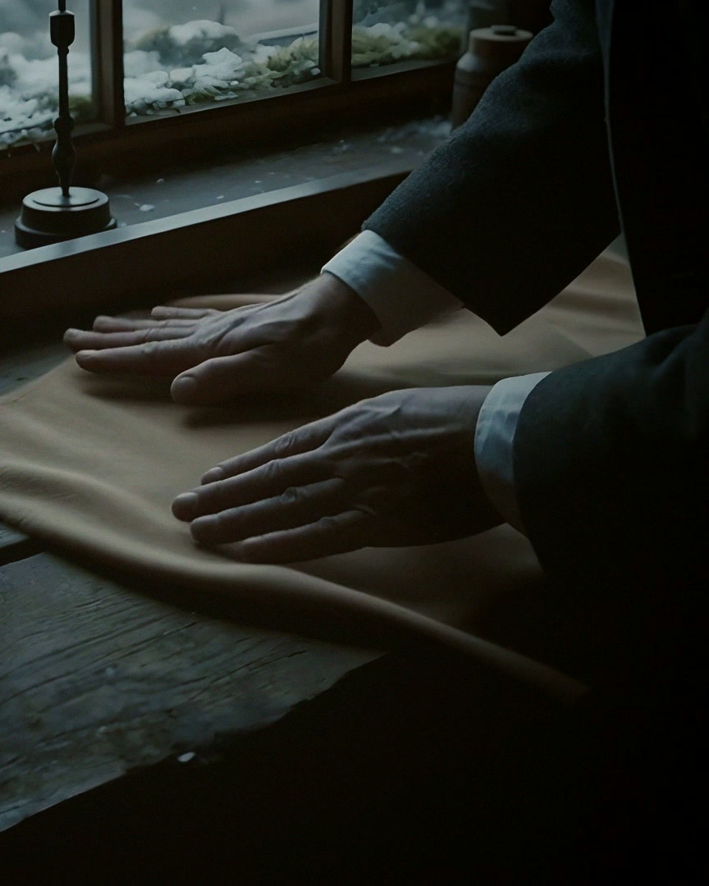
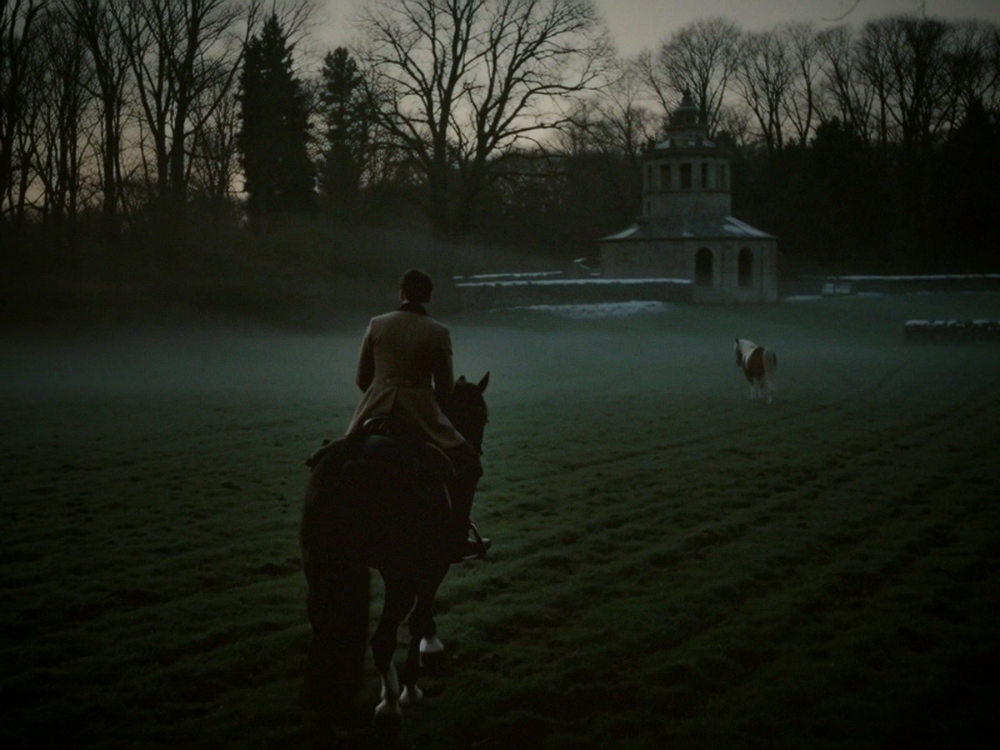
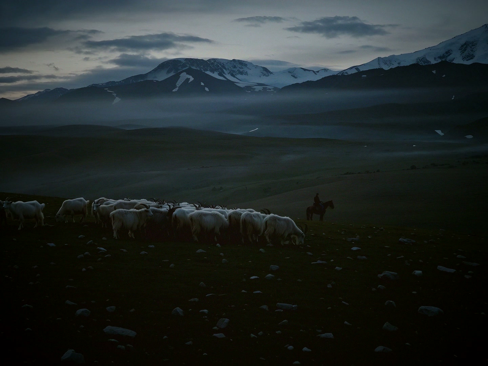
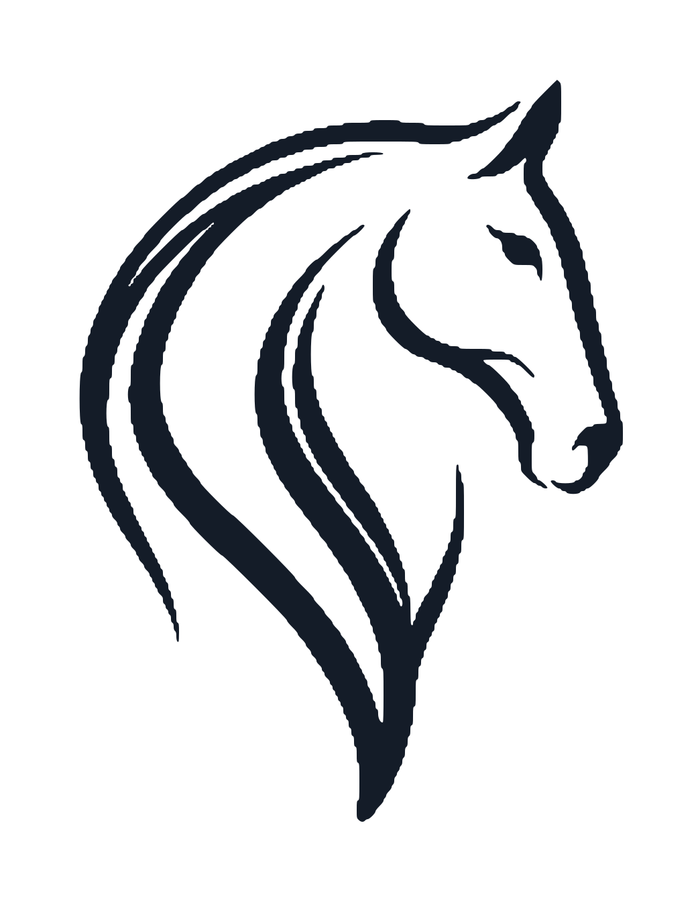

The Winter Room
A library above the lake, a fire, and the first pieces of the collection laid on the chair.

The House
House of Vael is a new Italian house built on an old idea: that the finest fibre in the world deserves the fewest words.
Our cashmere is chosen for the length and fineness of its fibre, spun and knitted in Italy by hands that have done nothing else for generations, and finished in colours taken from the places the House belongs to — the snow at Saint-Moritz, the stone of Milan, the water at Como.
Nothing is loud. Everything is felt.

The World
The Fibre
Cashmere is the underdown a goat grows against a winter at four thousand metres. A single animal gives less than two hundred grams a year. We take only the longest and finest of it, and we know which plateau it came from.
– Book a private appointment –Inside the House

A library above the lake, a fire, and the first pieces of the collection laid on the chair.

The House will be present on the frozen lake in January. Details by invitation.

Where the fibre begins: the herds, the herders, and a winter that decides everything.

The First Collection · Winter MMXXVI
Leave your name. The House will write to you.
Milano · Saint-Moritz · Monaco